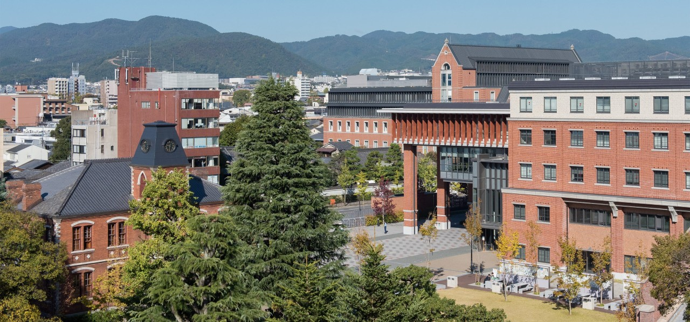
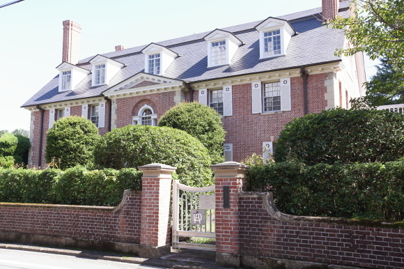
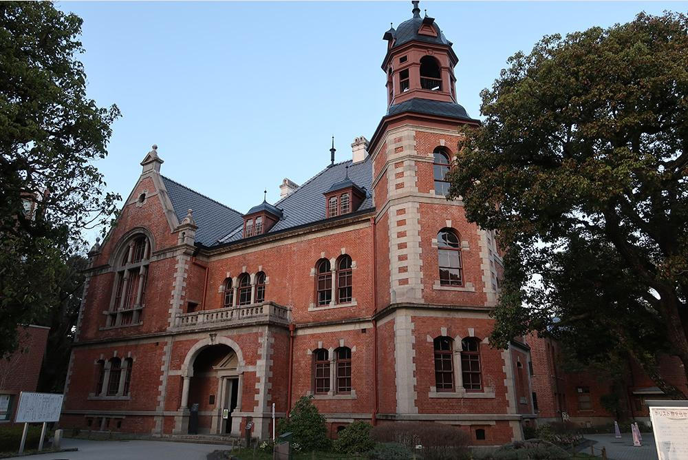
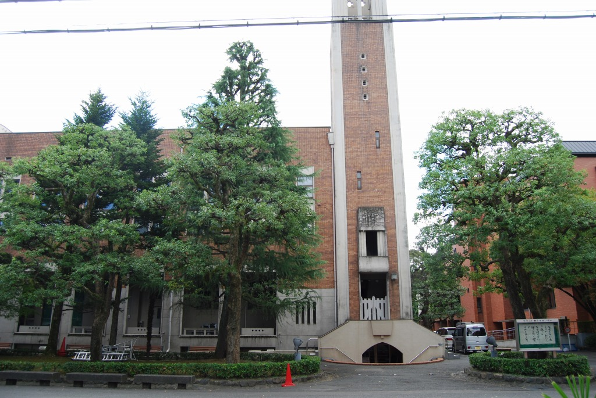
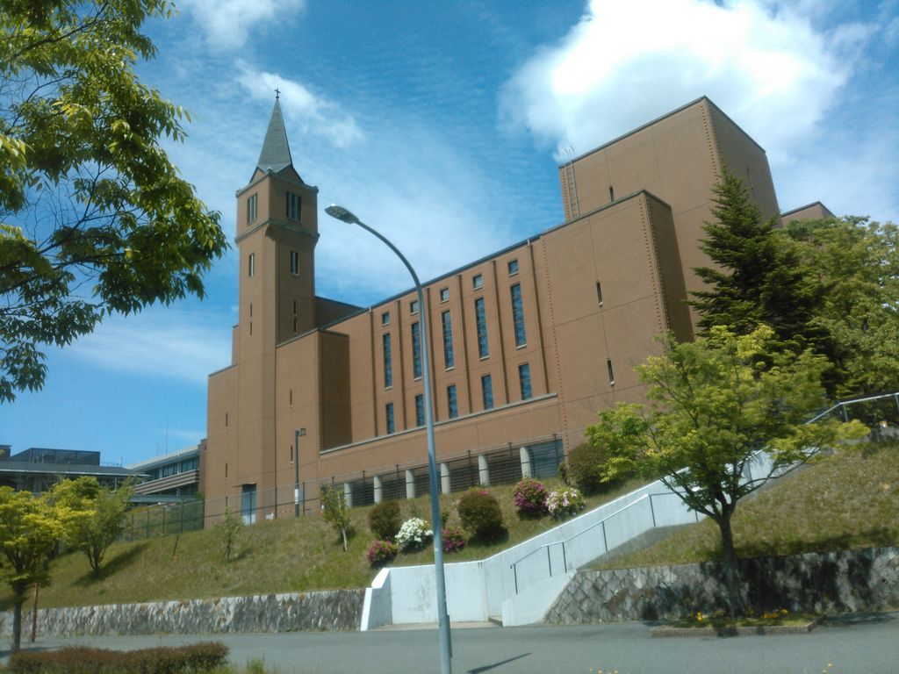

SEASONAL EVENTS四季の年間行事
春は京都散策、夏はBBQと花火、秋はハロウィンとEVE祭への出店、冬は合宿。四季の行事が、留学生との距離をぐっと縮めます。
Hello, world!同志社大学 国際交流サークル
言葉や国籍を越えて、日常の中で友だちになる。DESAは1969年から続く、同志社大学の国際交流サークルです。
同志社大学 文化系公認団体｜同志社大学・同志社女子大学の学生が所属
About DESA
DESA（デサ）は、同志社大学の文化系公認団体として活動する国際交流サークルです。1969年3月、同志社アーモスト館に約30名が集まって生まれました。同志社大学と同志社女子大学の学生が所属し、留学生や帰国生も多く在籍しています。今出川・京田辺の両キャンパスを拠点に、半世紀以上にわたって国境を越えた交流が続いています。海外の大学や国際交流団体とは、オンライン（Zoom）での交流も行っています。

Highlights
春は京都散策、夏はBBQと花火、秋はハロウィンとEVE祭への出店、冬は合宿。四季の行事が、留学生との距離をぐっと縮めます。
毎年3月ごろ、慶應義塾大学・獨協大学と合同で約10日間カンボジアに滞在するボランティア派遣。「ニョニュム」はクメール語で「笑顔」を意味します。DESAを代表する活動のひとつです。
「特別なもてなしはいらない。日常をありのまま見せればいい」——創立者の言葉のとおり、普段のキャンパスライフの中で交流します。他の国際系サークルとの合同新歓も行っています。
THE FOUNDER'S STORY
It started with a letter.
一週間、誰も手を挙げなかった交換留学の募集。手を挙げた同志社大学1年生・竹本繁さんの決断が、1969年のDESA設立へとつながっていきます。
創立者の物語を読むREAD THE FOUNDER'S STORY（外部リンク）→Welcome & Social Media
新入生・留学生のみなさんの入会を歓迎します。新歓イベントの日程や参加方法などの最新情報は、SNSでお知らせしています。まずはフォローして、活動の雰囲気をのぞいてみてください。
新歓イベントの具体的な日程・会場は です。決まり次第、SNSで告知します。
About Us
新島襄の国際友愛の精神を受け継ぎ、京都のキャンパスで半世紀以上続く国際交流の輪。
Our Philosophy
DESAの原点には、同志社の創立者・新島襄の「国際友愛」の精神があります。新島が学んだアーモスト大学と同志社の友情のしるしとして建てられたアーモスト館——DESAはその場所で、1969年に生まれました。アーモスト館は1932年、新島襄の偉業を記念してアーモスト大学から同志社に寄贈された、白煉瓦のニューイングランド・ジョージアン様式の建物です。特別なもてなしではなく、日常をありのまま分かち合うこと。その精神を、代々のメンバーが受け継いでいます。

Profile
| 団体名 | 同志社大学国際交流サークル DESA（Doshisha Exchange Student Association／同志社交換学生協会） |
|---|---|
| 種別 | 同志社大学 文化系公認団体 |
| 設立 | 1969年3月（同志社アーモスト館にて設立総会、約30名） |
| 創立者 | 竹本繁さん |
| 活動拠点 | 今出川キャンパス・京田辺キャンパス |
| 部員数 |
同志社大学と同志社女子大学の学生が所属しています。留学生や帰国生も多く、国籍もバックグラウンドもさまざまなメンバーが集まるのがDESAの特徴です。
「留学生と日本人学生が1対1で活動できるサークル」をめざしています。数の上でも関係の上でも対等に、一人ひとりが顔の見える交流を積み重ねることが目標です。
DESAには渉外局があり、海外の国際交流団体やスタンフォード大学日本センターなどと連携しています。海外大学とのZoom交流も行っており、京都にいながら世界とつながる機会があります。
Our Campuses
DESAの活動拠点は、京都市内の今出川キャンパスと、京田辺市の京田辺キャンパス。煉瓦造りの歴史ある校舎が残る今出川と、緑豊かな丘の上の京田辺——ふたつのキャンパスの日常の中で、交流は育まれます。



History
1969年、アーモスト館。一人の1年生の決断から、DESAは始まりました。
同志社大学経済学部の1年生だった竹本繁さんは、同志社アーモスト館に入寮していました。ある日、アーモスト館の掲示板に、一通の手紙が貼り出されます。カナダのブリティッシュコロンビア大学（UBC）の教授からの手紙で、「同志社から交換学生を試しに一人送ってほしい」という内容でした。
ところが、一週間たっても誰も名乗り出ませんでした。そこで手を挙げたのが、竹本さんでした。
立ちはだかったのは費用の問題です。当時の渡航費は、大卒初任給の何倍にもなる大きな金額でした。竹本さんは「一生に一度のお願いです」と訴えてその費用を用意し、同志社からただ一人、カナダへ渡りました。
UBCで過ごしたあと、竹本さんはカナダとアメリカを約1か月かけて横断しました。その旅のなかで訪ねたのが、新島襄が学んだアーモスト大学です。同志社の原点に触れる旅は、帰国後の竹本さんの決意を形づくっていきました。
帰国した竹本さんは、ガリ版刷りの設立趣意書を作り、キャンパスで配り始めます。しかし寮の仲間からは、費用などを理由に反対の声が上がりました。それでも竹本さんは譲りませんでした。
「特別なもてなしはいらない。日常をありのまま見せればいい。東京から従妹が遊びに来ると思えばいい」
— 竹本繁さんの言葉
そして「一人でもやる」と決めました。交流に必要なのは立派な催しではなく、ありのままの日常を見せ合うこと——この考え方は、いまのDESAにも受け継がれています。
1969年3月、アーモスト館に約30名が集まり、設立総会が開かれました。DESA（同志社交換学生協会）の誕生です。舞台となったアーモスト館は、1932年に新島襄の偉業を記念してアーモスト大学から同志社に寄贈された、白煉瓦のニューイングランド・ジョージアン様式の建物。アーモスト大学と同志社の友情のしるしとして建てられた場所でした。
設立の年、1969年の夏には、カナダから最初の学生たちが来日しました。言葉が十分に通じなくても、身振り手振りを交えながら一緒に過ごす中で、自然と交流が生まれていきました。言葉を越えた交流は、DESAの最初の夏に、もう始まっていました。
この物語の背景には、新島襄の国際友愛の精神があります。そして、アーモスト大学と同志社の友情のしるしであるアーモスト館。一通の手紙への小さな一歩が、半世紀以上続く交流の輪になりました。DESAの活動は、その輪を次の世代へつないでいく営みです。
Timeline
THE FOUNDER'S STORY
掲示板の手紙から設立総会まで——DESAの原点を綴った物語は、特設ページで公開しています。
創立者の物語を読むREAD THE FOUNDER'S STORY（外部リンク）→Activities
四季の行事、カンボジアへの派遣、そして京都ならではの経験。DESAの一年を紹介します。
Seasonal Events
新学期の始まりは、留学生と一緒に歩く京都散策から。新しい仲間との出会いの季節です。
夏の行事はBBQと花火。日本の夏を、みんなで思いきり楽しみます。
秋はハロウィン。それぞれの国の文化が交わる、にぎやかな行事です。大学祭のEVE祭にも出店しており、昨年度はベトナム料理のフォーを販売しました。
冬は合宿。寝食を共にする時間で、メンバー同士の絆が深まります。
Nyonyum — Cambodia Volunteer Program
「ニョニュム」は、DESAを代表する海外ボランティア派遣です。毎年3月ごろ、慶應義塾大学・獨協大学と合同で、約10日間カンボジアに滞在してボランティア活動を行います。「ニョニュム」とは、クメール語で「笑顔」という意味。現地では村の子どもたちとの交流、学校での勉強会、歯磨き講習などを行い、アンコールワット遺跡の見学もプログラムに含まれます。
2026年は3月2日〜12日に実施されました。次の目標は、トロピアンコ小学校に図書室を作ること。その実現に向けて、クラウドファンディングにも挑戦しました。
コロナ禍により約3年間の中断を余儀なくされましたが、いまは完全再開をめざして歩みを進めています。「京都から世界へ」を体現する、DESAの大切な活動のひとつです。
Only in Kyoto
DESAならではの経験として紹介したいのが、清水寺でのアルバイトです。京都を代表する寺院で働く機会は、学生時代にしか得られない貴重な経験。世界中から訪れる人々と接することも、国際交流サークルらしい学びにつながります。
仕事内容や応募条件などの詳細は です。関心のある方は、入会案内ページからお問い合わせください。
OUR GOAL
One to one, face to face.
DESAがめざすのは、留学生と日本人学生が対等に、一人ひとり顔の見える関係で活動できるサークルです。その一歩を、私たちと一緒に踏み出しませんか。
Join & Contact
新入生も、留学生も、帰国生も。DESAの扉は開かれています。
How to Join
SNSや新歓イベントで、活動の様子をチェックしてください。
実際の活動に参加して、雰囲気を体験してみてください。
SNSのDMまたは下記フォームからご連絡ください。
メンバーとして、行事や交流活動に参加します。
※見学・体験の申込方法、会費などの詳細は です。最新情報はSNSでご確認ください。
FAQ
Contact
Social Media
Alumni Association
卒業しても、DESAの輪は続きます。卒業生のみなさまへ。
Annual Gathering
DESAでは毎年、OB・OGが集まる会を開いています。会場にはレンタルスペースを借りて実施しています。1969年の設立から半世紀以上——世代を越えてメンバー同士が再会し、在学中の思い出と現在のDESAをつなぐ、大切な機会です。
卒業生のみなさまには、集まりのご案内をお送りしています。連絡先の登録・変更は、下記の卒業生向け連絡フォームからお知らせください。
次回の集まりの日時・会場は です。決まり次第、登録いただいた連絡先へご案内します。
Alumni Contact
CONTACT
新入生・留学生・帰国生のみなさんの参加を歓迎します。見学・体験のご相談は、入会案内ページからお気軽にどうぞ。